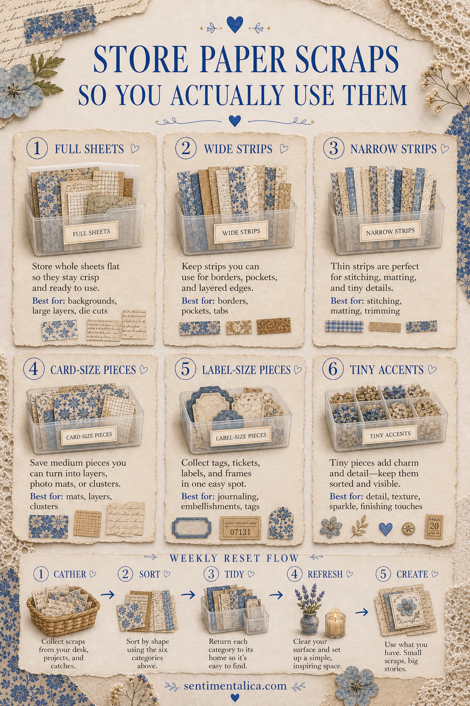
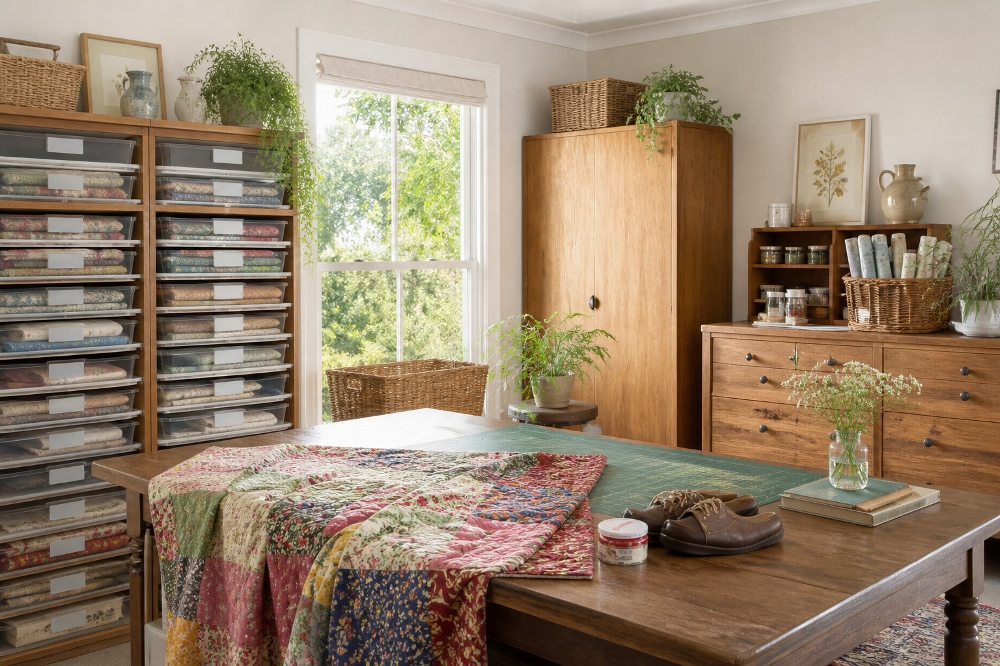

Paper storage fails when beautiful scraps become invisible. A practical system should show you what you own and match the way you reach for pieces while making—not ask you to maintain a miniature archive.

Sort by what the scrap can do
Create four groups: page bases, photo mats, strips, and tiny details. This is faster to use than sorting every scrap by color. A floral rectangle and a ledger rectangle may look unrelated, but both can mat a photograph; they belong where that decision happens.
Use shallow, open containers
Store page bases upright in a magazine file, mats in one clear pouch, strips in a long tray, and tiny pieces in a divided box. Keep containers shallow enough that nothing forms a hidden bottom layer. Label the function, not a complicated category.

Add one current-project basket
Place the papers selected for an active journal in a small portable basket. Include only the current palette, plus a neutral envelope for leftovers. When the project ends, return usable pieces to the four main groups instead of starting another permanent theme box.
Set a comfortable limit
Give each category a physical boundary. When the strip tray is full, choose favorite pieces and recycle the rest. A limit keeps the collection inspiring and prevents a storage project from replacing the craft itself.
Keep a scrap menu near the desk
Write five frequent uses on a card: tabs, labels, hinges, pockets, and collage bridges. When you find a difficult offcut, match it to the menu before discarding it. If it has no likely use and does not delight you, let it go. Visibility and permission to edit are what make the system sustainable.